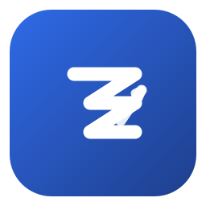
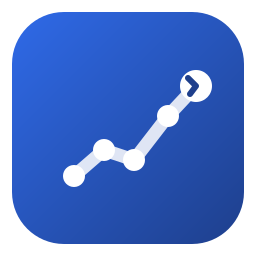

Brand Mark
Quantlerning 品牌图标
一个主推方案 + 两个备选方向。三个方案都围绕「量化 × 学习」：以深蓝圆角为底，几何白线为形，确保在 favicon、应用图标、深浅主题下都清晰、克制、可记忆。
主推方案 · A「学习曲线 Q」
推荐作为正式图标 — Q 字母代表 Quantlerning，碗内上升折线代表数据/学习曲线，尾部保留字母识别度。
三个方向对比
悬停查看细节。如主推不合适，可在 B / C 中二选一。
A · 学习曲线 Q
Q 字母 + 碗内上升折线。最贴合品牌名与「成长」语义。

B · 求和 Σ
数学求和符号 + 上行箭头。强调「量化=数学」，更学术。

C · 进阶路径
节点连成上升链路。强调「循序渐进的学习路径」。
尺寸梯度
同一图形在 16 → 256 全程保持可识别，无细节坍塌。
深浅主题下的表现
tile 自带深蓝，在浅色与深色背景上都成立；无需为暗色重绘。
Light
Dark
单色降级（无渐变场景）
使用
icon-mark.svg（currentColor），在纯色块 / 文字标旁自动取色。深蓝底 · 白
墨底 · 白
纸底 · 蓝
文字标 Lockup
图标 + 名称的标准组合，用于顶栏与页脚。
使用规范
最小尺寸
功能性使用不小于 16px；纯装饰可到 12px，但需关闭碗内折线细节。
留白
tile 与文字/边界至少保留 1/8 边长 的安全间距。
配色
主色固定深蓝渐变；单色场景用 --blue-600 或纯白，勿自行改色相。
favicon
导出 16/32/48/180 多尺寸 + mask-icon 用单色 mark（currentColor）。